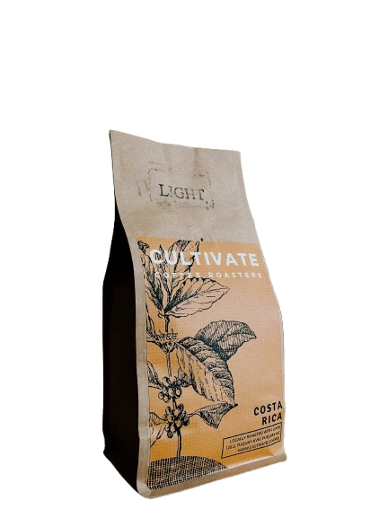
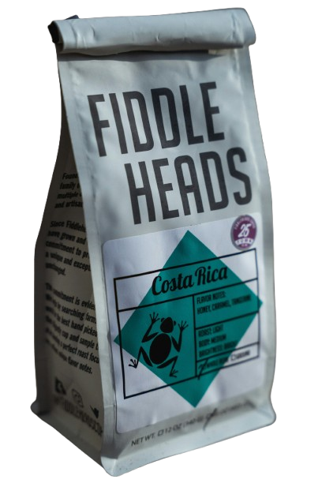
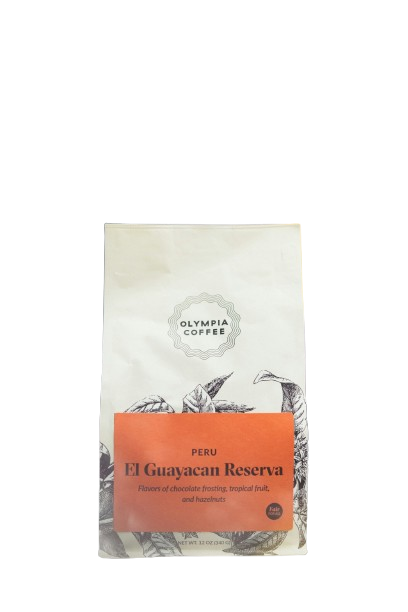

Café du Monde is another regional coffee like the New England brand, only this company is still in production in its original home city. New Orleans has a lot of different coffee companies these days, but Café du Monde's specialty chicory roasts are one of the originals. The beignet stand has been around since 1862, with coffees available nationwide for a good portion of that long history. Despite such a storied past, Café du Monde coffee requires a particular type of taste bud to be truly appreciated.

$15.00 ៛60000
Cultivate
Crowd to Community, Inc. is a 501c3 nonprofit organization working to transform crowds of individuals occupying the same space into a community united with a common mission. It is also our parent organization. Crowd to Community works to give these individuals hope, job opportunities, and leadership and life skills. Under this organization are many business extensions that employ displaced people struggling in these areas, giving them a place in their community to thrive.

$15.00 ៛60000
Fiddle Heads
We are Fiddleheads Coffee, a family-owned and operated small-batch coffee roastery based in Thiensville, WI. Our roasting journey began in 2008, when our owners traveled to Mill Valley, California, to learn coffee roasting from Willem Boot, one of the country’s foremost experts in the field. Since then, we’ve perfected our craft and infused our process with Fiddleheads flair to bring you a great cup of coffee.

$15.00 ៛60000
Olympia
Olympia Coffee's success is grounded in our quality-of-life mission, which has lead us to create direct trade partnerships with coffee farmers worldwide in eight countries spanning 3 continents. Our company wasn’t born into success; it has been built that way from the ground up. Olympia Coffee’s humble beginnings started 2005 in an unmarked warehouse in downtown Olympia. The story continues.